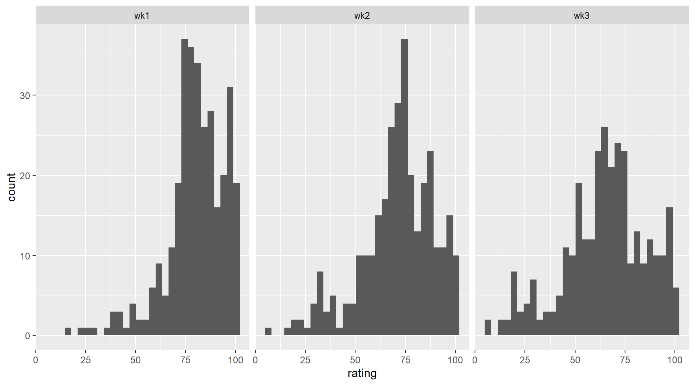

library(tidyverse)
library(skimr)
billboard <- read_csv('https://bcdanl.github.io/data/billboard.csv')Classwork 10 - Tidy Data
Data Analytics 200
1 Question 1
2 Q1a
- Describe how the distribution of rating varies across week 1, week 2, and week 3 using the faceted histogram.
q1a <- billboard %>%
pivot_longer(cols = wk1:wk76,
names_to = "week",
values_to = "rating") %>%
filter(week %in% c('wk1', 'wk2', 'wk3'))
ggplot(q1a,
aes(x = rating)) +
geom_histogram() +
facet_wrap(.~ week)
3 Q1b
Which artist(s) have the most number of tracks in
billboarddata.frame?Do not double-count an artist’s tracks if they appear in multiple weeks.
4 Question 2
ny_pincp <- read_csv('https://bcdanl.github.io/data/NY_pinc_wide.csv')5 Q2a
- Make
ny_pincplonger.
q2a <- ny_pincp %>%
pivot_longer(cols = pincp1969:pincp2019,
names_to = "year",
values_to = "pincp")6 Q2b
- Provide both (1) ggplot code and (2) a simple comment to describe how overall the yearly trend of NY counties’ average personal incomes are.
7 Question 3
covid <- read_csv('https://bcdanl.github.io/data/covid19_cases.csv')8 Q3a
Keep only the following three variables,
date,countriesAndTerritories, andcases.Then make a wide-form data.frame of
covidwhose variable names are fromcountriesAndTerritoriesand values are fromcases.Then drop the variable
date.
9 Q3b
Use the wide-form data.frame of
covidto find the top 10 countries in terms of the correlation between their cases and theUSAcase.Use
cor(data.frame), which returns a matrix.Then convert it to data.frame using
as.data.frame(matrix)